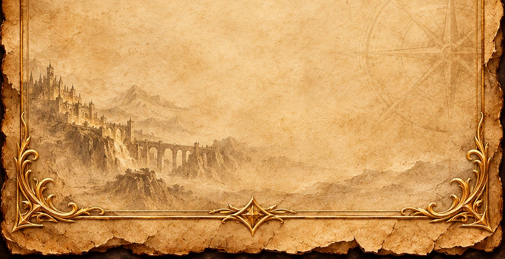

The Phantom Accord
An important organization within the history of Kairoth.
Orders, alliances, rivalries, and the institutions that guide or contest the fate of the realm.
An important organization within the history of Kairoth.
The people and doctrine of the Iron Order.
The Concordate of the High Armathor and imperial authority.
Kingdoms, empires, and the institutions surrounding them.
The relationships that influence the balance of power.
A collection of the organizations that shape this world.
An opening index — detailed records will be added as the archive grows.
